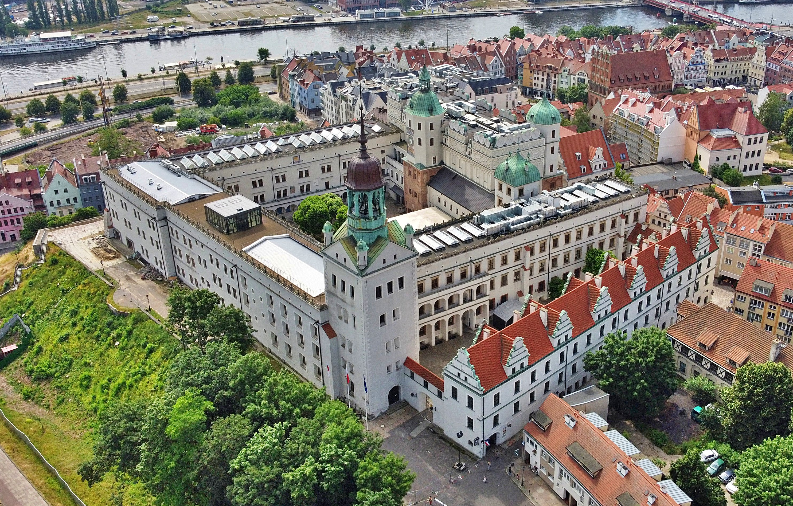
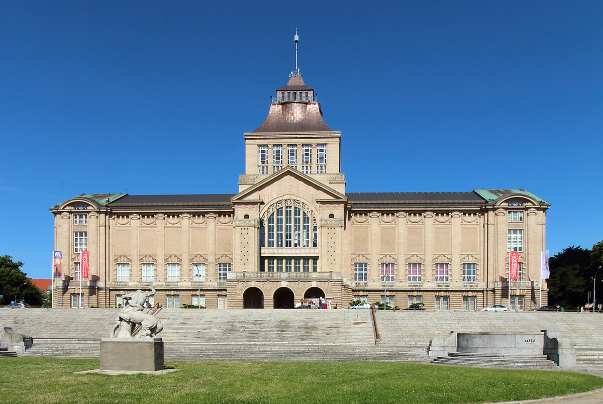
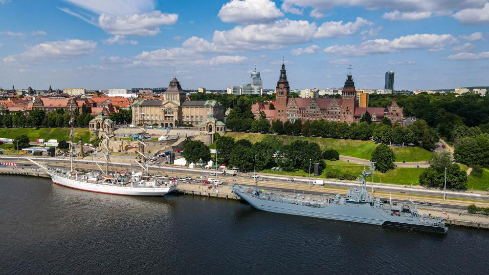
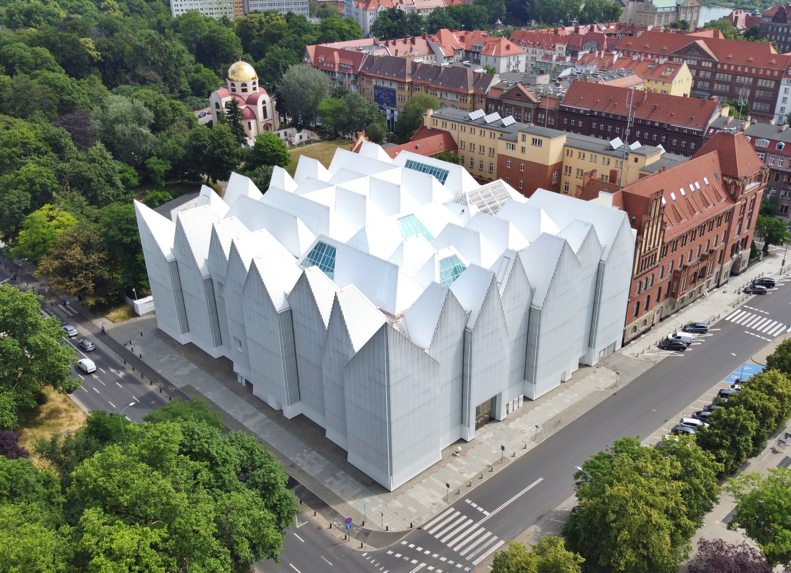
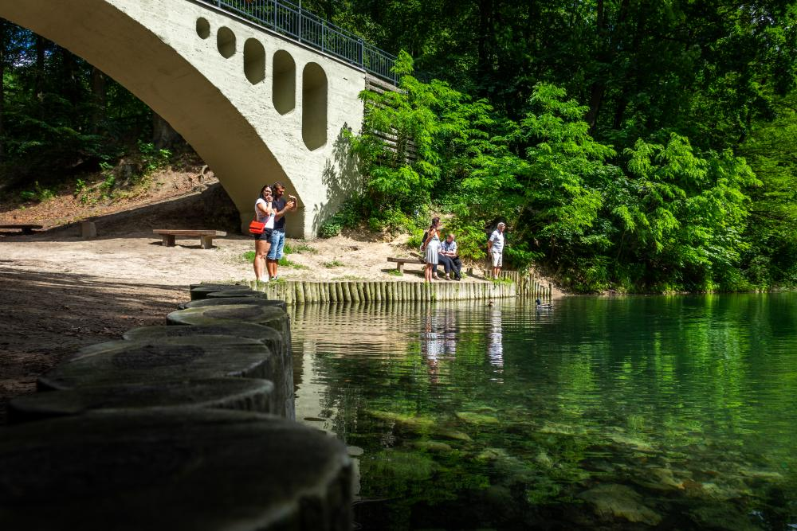
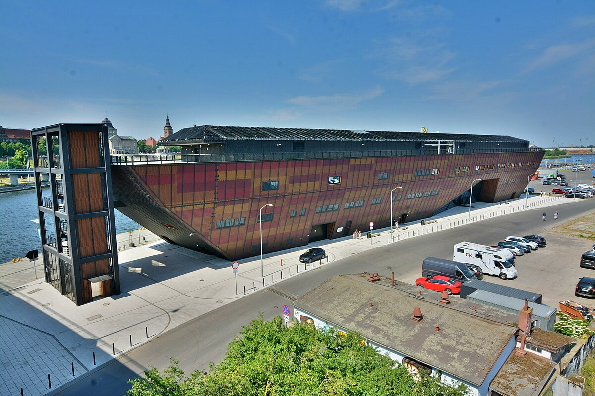
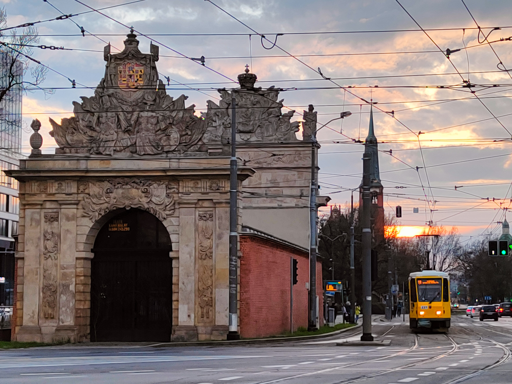

Szczecin, stolica województwa zachodniopomorskiego, to miasto bogate w historię, kulturę i niezliczone atrakcje, które przyciągają zarówno turystów z kraju, jak i zagranicy. Położone nad rzeką Odrą, Szczecin jest znane nie tylko ze swojego pięknego położenia, ale także z fascynujących miejsc wartych odwiedzenia.
Nie sposób opisać wszystkich atrakcji, które Szczecin ma do zaoferowania, ale niektóre z nich stanowią prawdziwe perełki regionu. Od zamków i pałaców, po muzea, parki i wydarzenia kulturalne, Szczecin przyciąga każdego, kto pragnie odkrywać nowe miejsca.
Czy jesteś miłośnikiem historii i architektury? Zamek Książąt Pomorskich z pewnością Cię zafascynuje. A może jesteś pasjonatem sztuki? Muzeum Narodowe w Szczecinie posiada bogate zbiory, które zaspokoją Twoje ciekawości. Wały Chrobrego, z charakterystycznym fontannami i rzeźbami, to ulubione miejsce spacerów mieszkańców i turystów.
Szczecin to również miasto festiwali, koncertów i wydarzeń kulturalnych. Od Festiwalu Szczecińskiego Piosenki po Międzynarodowy Festiwal Filmowy, miasto oferuje rozrywkę na najwyższym poziomie
Zamek Książąt Pomorskich

Średniowieczny zamek w centrum miasta.Historia zamku
Zabytek może poszczycić się bogatą historią i licznymi ciekawostkami,
które podawane są między odwiedzającymi od dawna. Już przed rokiem 1124 stał w miejscu zamku drewniany gród z dworem
księcia Warcisława I. W 1235 roku książę pomorski Barnima I przeniósł do Szczecina stolicę Księstwa Pomorskiego.
To czas, kiedy ziemiami nad południowym Bałtykiem przez ponad pół tysiąca lat władali Gryfici.
Ranking popularności 9/10
Muzeum Narodowe w Szczecinie

Zbiory sztuki, historii i kultury regionu.Historia muezeum
Utworzone zostało 1 sierpnia 1945 roku jako polskie Muzeum Miejskie w Szczecinie.
Założycielem i organizatorem placówki był przybyły z Poznania Lech Krzekotowski,
a jego działania wspierał pionier szczecińskiego muzealnictwa – Kazimierz Haska. Muzeum przejęło pozostałości zbiorów
Stadtmuseum na Hakenterrasse (dziś Wały Chrobrego) i Pommersches Landesmuseum – dawniej Pałac Sejmu Stanów, przy ul. Staromłyńskiej 27,
gdzie mieści się Muzeum Tradycji Regionalnych. Rozpoczęło także kolekcjonowanie polskiej sztuki współczesnej. W kolejnych latach zwiększało swoje zbiory najpierw dzięki depozytom z innych muzeów polskich, potem tworząc stopniowo kolekcje własne.
Jednocześnie utraciło część zbiorów poniemieckich na rzecz innych muzeów warszawskich (szczególnie etnograficznych).
Ranking popularności 7/10
Wały Chrobrego

Nabrzeże w centrum Szczecina przy odrze.Historia Wałów Chrobrego
W 1873 rozpoczęło się wyburzanie XVIII-wiecznych fortyfikacji Szczecina. Pierwsza koncepcja zabudowy terenów likwidowanego Fortu Leopold na wyniosłym brzegu Odry powstała w 1876. Od 1878 do 1907 urząd nadburmistrza Szczecina sprawował Hermann Haken. Dzięki jego wielkiemu zaangażowaniu kolejną koncepcję opracowano w 1894, a w 1901 podjęto decyzję o realizacji.
W latach 1902–1907 uformowano, na wysokości 19,3 m n.p.m. (19 m nad poziomem Odry Zachodniej), taras widokowy według projektu urbanistycznego Wilhelma Meyera-Schwartau.
Na szczycie nasypów ziemnych wzdłuż Odry powstała wysadzana drzewami aleja spacerowa, zakończona na krańcach półokrągłymi placykami.
Ranking popularności 10/10
Filharmonia

Średniowieczny zamek w centrum miasta.Historia filharmoni
W 2004 roku zawiązał się Społeczny Komitet na rzecz Budowy Nowej Filharmonii w Szczecinie, który podjął skuteczne starania o wybudowanie
jej w miejscu dawnego Konzerthausu[14], rozebranego w 1962 po zniszczeniach z czasu II wojny światowej. W 2007 został ogłoszony konkurs
na projekt nowego budynku instytucji. Spośród 44 propozycji została wybrana praca autorstwa Estudio Barozzi Veiga (Fabricio Barozzi,
Alberto Veiga)
Ranking popularności 6/10
Bazylika Archikatedralna pw. św. Jakuba Apostoła
Główny kościół rzymskokatolicki SzczecinaHistoria Bazyliki
Świątynia została wzniesiono na niewielkim wzgórzu poza murami miasta na wzór kościoła klasztornego benedyktynów pw. św. Michała Archanioła
w Bambergu. Za fundatora uważa się bogatego mieszczanina Beringa z Bambergu, który prawdopodobnie traktował nową świątynię jako wotum
za dzieło misyjne ewangelizacji Pomorza, dokonane przez jego słynnego rodaka Ottona z Bambergu, zwanego Apostołem Pomorza[potrzebny
przypis]. W źródłach podaje się datę 1187 jako datę konsekracji. Dokonał tego ówczesny biskup kamieński Zygfryd. Była to trzecia
z kolei świątynia chrześcijańska w mieście Szczecin[3]. W 1220 lub 1221 r. w kościele pochowany został książę pomorski Bogusław II
Ranking popularności 7/10
Jezioro Szmaragdowe

Sztuczne jezioro położone na osiedlu Szczecina – Zdrojach, na obszarze Parku Krajobrazowego „Puszcza Bukowa”. Historia Jeziora
Jezioro powstało w wyrobisku dawnej kopalni kredy i margla, eksploatowanej przez powstałą w 1862 roku pobliską fabrykę
cementu portlandzkiego „Stern”. W okolicy dzisiejszego Jeziora Szmaragdowego rozpoczęto w 1862 r. przemysłową eksploatację
porwaka margli o miąższości ok. 40–60 m.
Ranking popularności 3/10
Morskie Centrum Nauki

Miejsce poświęcone zagadnieniom związanym z morzem i oceanemHistoria centrum moeskiego
Obiekt powstały na Łasztowni w Szczecinie to multimedialna placówka naukowo–edukacyjna, której głównym założeniem jest
prezentowanie eksperymentów fizycznych związanych z wodą. Centrum posiada wystawę stałą, zawierającą interaktywne elementy nauki i
techniki.
Ranking popularności 4/10
Brama Portowa

jedna z bram miejskich Szczecina, zbudowana w stylu barokowymHistoria Bramy
Jest jedną z dwóch (obok Bramy Królewskiej) zachowanych do czasów współczesnych bram,
będących pozostałością dawnych fortyfikacji pruskich. Zewnętrzna ściana bramy została ozdobiona przez francuskiego
rzeźbiarza Bartholomé Damarta. Umieszczono tu tarczę z monogramem króla Fryderyka Wilhelma I, fundatora tego obiektu.
W attyce tablica ze złoconym napisem w języku łacińskim, który informuje o prawach państwa brandenburskiego do Pomorza i Szczecina,
ponieważ Fryderyk Wilhelm w 1719 kupił Szczecin od Szwedów za dwa miliony talarów:
Ranking popularności 4/10
Miejsce
Atrakcja
Stare Miasto
Atrakcja
Opis
Zamek Książąt Pomorskich
Średniowieczny zamek w centrum miasta.
Muzeum Narodowe w Szczecinie
Zbiory sztuki, historii i kultury regionu.
Wały Chrobrego
Nabrzeże w centrum Szczecina przy odrze
Bazylika Archikatedralna pw. św. Jakuba Apostoła
Główny kościół Szzcecina
Nowe Miasto
Atrakcja
Opis
Brama Portowa
jedna z bram miejskich Szczecina, zbudowana w stylu barokowym